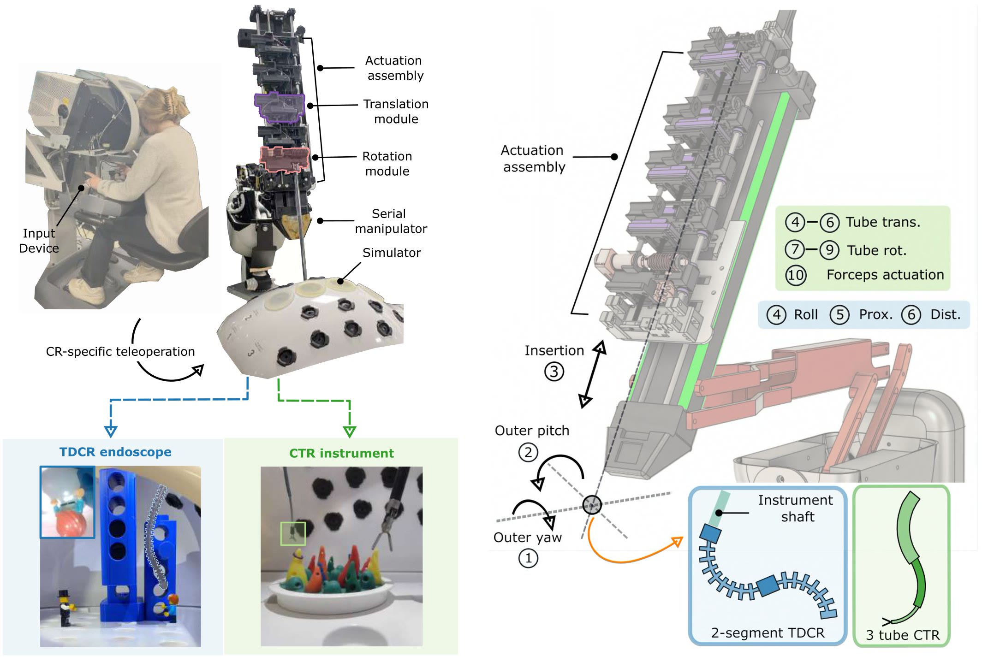
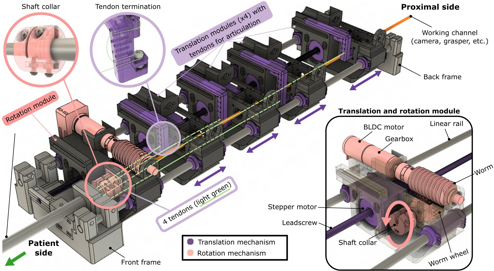
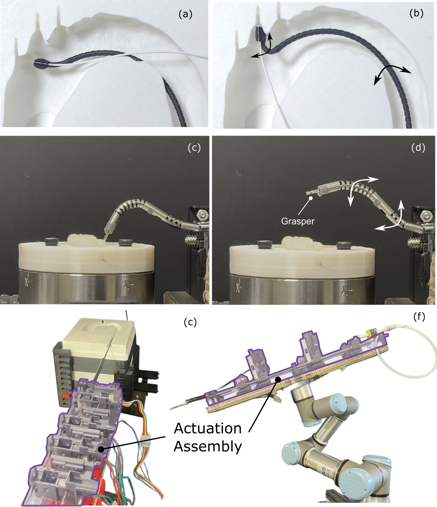

Sub-millimeter translational accuracy and less than 5° rotational error, over ranges of 30 mm and 180°, respectively.
Team
Early Adopters

Design Overview

Extensions

Papers Using the Platform
Acknowledgements
The authors would like to thank Noah Jones for his contributions to the electrical integration and initial motor motion control implementation; Sara Sariowan for her contributions to the dVRK attachment design; and Jui-Te Lin for his initial guidance on the instrument actuation design.
BibTeX
@article{xu2026unified,
title = {A Unified Continuum Robot Actuation Platform},
author = {Xu, Yunti and Mangan, Aedan and Potdar, Miheer and Lu, Alex and Morimoto, Tania K.},
journal = {arXiv preprint arXiv:XXXX.XXXXX},
year = {2026}
}